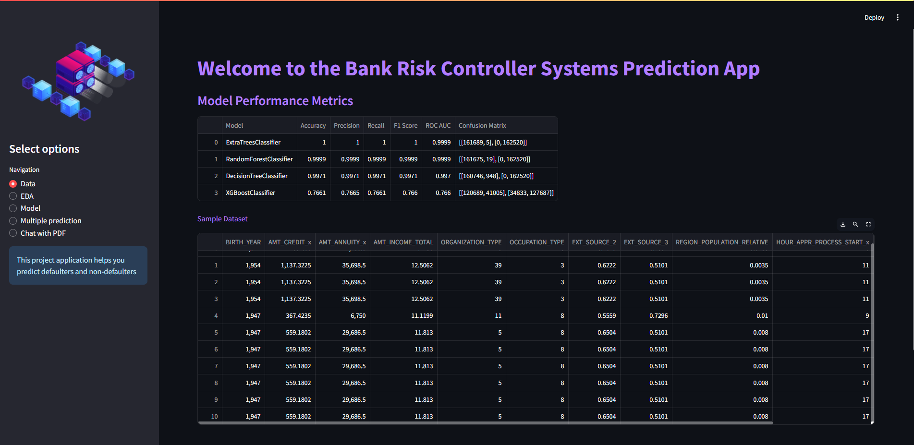
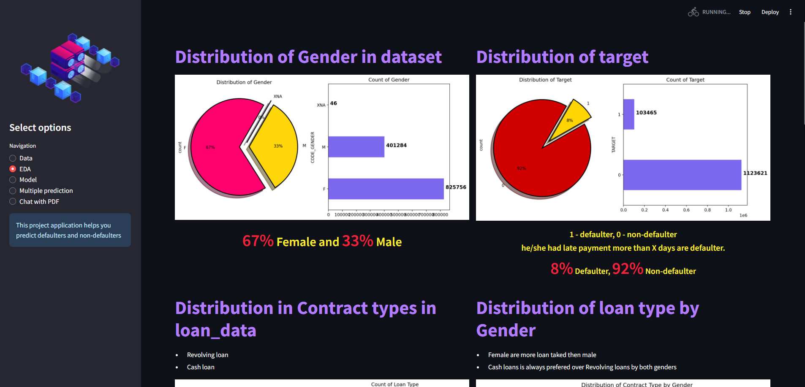
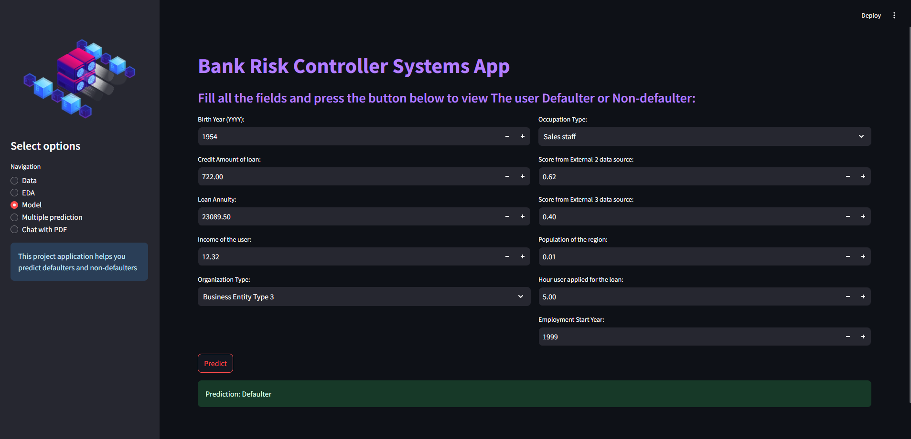
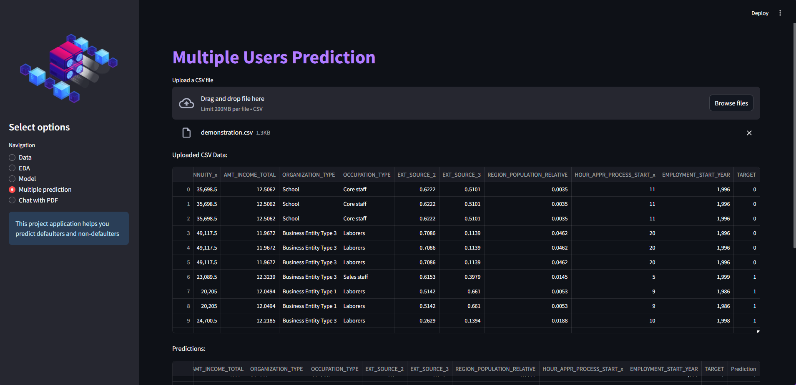
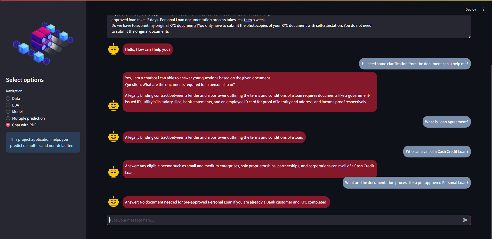

Bank Risk Controller Systems
Welcome to the Bank Risk Controller Systems project! This application provides insights and predictions related to loan defaulters and non-defaulters using advanced machine learning models and interactive visualizations. It also features a chatbot that can answer questions based on the content of uploaded PDFs.
Project Overview
This project is designed to help users understand their risk profile by predicting whether an individual will default on a loan based on various features. It includes exploratory data analysis (EDA) and a chatbot feature to interact with PDF documents.
Sample Screenshot





Features
-
Model Predictions
- Single Prediction: Input loan and personal details to predict if the user is a defaulter or non-defaulter.
- Multiple Predictions: Upload a CSV file containing multiple user records to get predictions for all users.
-
Exploratory Data Analysis (EDA)
- Visualize distributions of gender, target (defaulter/non-defaulter), contract types, and loan types.
- Includes pie charts and bar charts to illustrate the data.
-
Chatbot with PDF Interaction
- Upload a PDF and interact with it through a chatbot interface.
- The chatbot uses the content of the PDF to provide relevant responses to user queries.
Requirements
- Python 3.x
- Libraries:
- pandas
- numpy
- pickle
- streamlit
- matplotlib
- seaborn
- pdfplumber
- scikit-learn
- langchain
- langchain_community
- langchain_huggingface
- python-dotenv
Installation
- Clone the repository:
git clone https://github.com/naveen-anandhan/Bank-Risk-Controller-Systems.git
- Install the required packages:
pip install -r requirements.txt
- Set up environment variables:
Create a .env file and add your Hugging Face API token:
HF_TOKEN=your_huggingface_api_token
Usage
- Run the Streamlit Application:
streamlit run web.py
- Navigate through the application:
- Data: View sample datasets and model performance metrics.
- EDA: Explore various data visualizations.
- Model: Input user details to get loan defaulter predictions.
- Multiple Prediction: Upload a CSV to get predictions for multiple users.
- Chat with PDF: Upload a PDF and interact with it through the chatbot.
Files
- app.py: Main Streamlit application script.
- eda_data.csv: Sample data used for exploratory data analysis.
- model_data.csv: Data used for displaying sample records.
- ET_Classifier_model.pkl: Pickle file for the Extra Trees Classifier model.
- label_encoders.pkl: Pickle file for label encoders used in the model.
- .env: File to store environment variables (e.g., Hugging Face API token).
Contributing
Contributions are welcome! Please fork the repository and submit a pull request with your changes.
License
This project is licensed under the MIT License - see the LICENSE file for details.